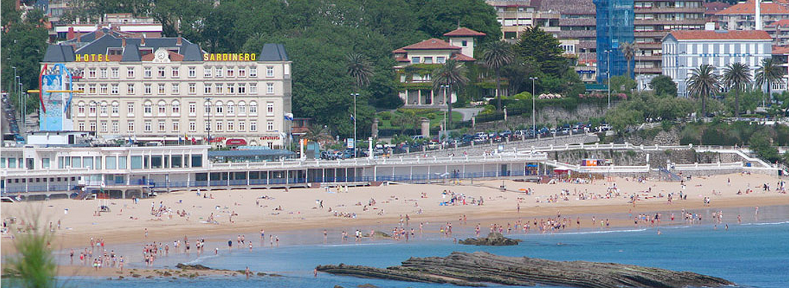
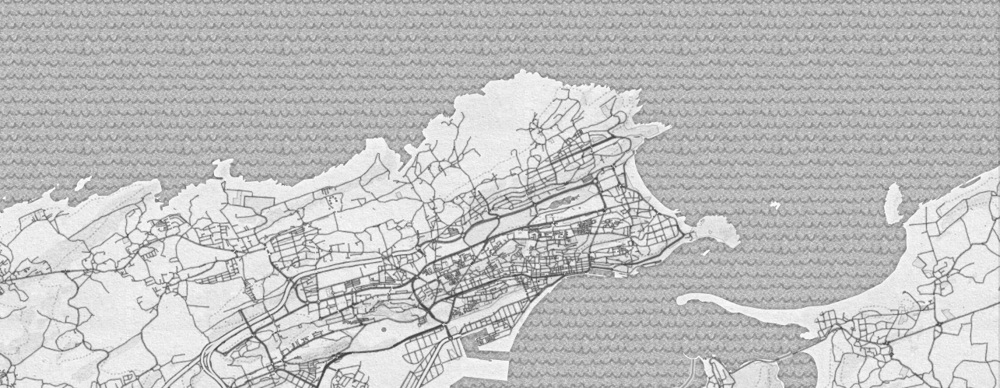

Smart Santander Data Analysis
Proyecto de tratamiento de datos de la SmartCity de Santander dentro de una arquitectura lambda, mediante el uso de herramientas Big Data.

Recolección y almacenamiento
A partir de los datos que emiten los sensores de la Smart City, y que se publican en una web, se genera un almacén de datos distribuido desde el cual se pueden hacer diversos análisis de la información y visualizaciones.

Análisis y visualización
Los datos se agregan mediante jobs de Apache Spark y se almacenan en una base de datos Cassandra para su posterior visualización web.
Empleo de la librería MLLib de Machine Learning para utilizar el algoritmo de clustering en la clasificación de días según ciertas medidas recogidas y visualización de sus resultados en la web.